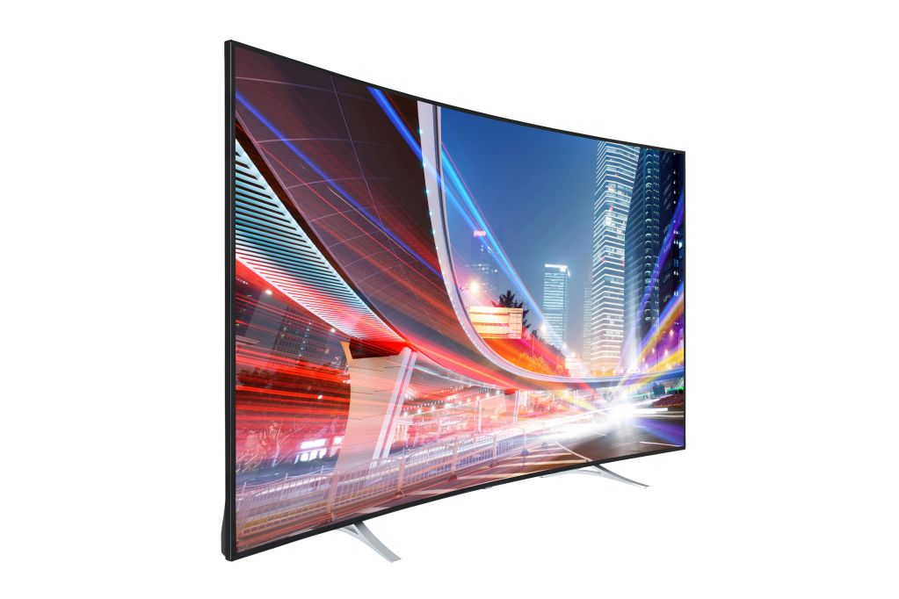
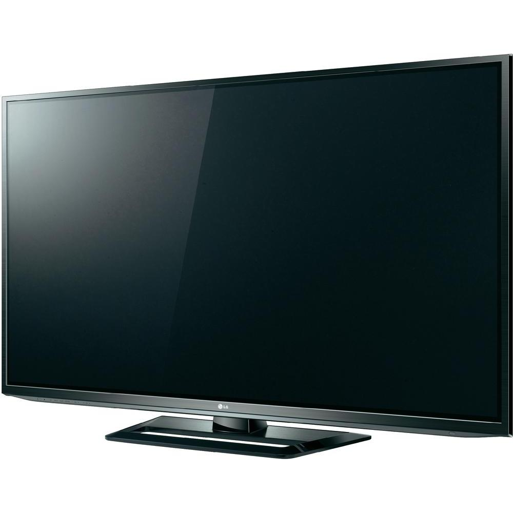

Kaum waren die ersten Flach-TV-Geräte am Markt, standen auch schon zwei Technologien in Konkurrenz zueinander: Plasma und LCD. Beide Lager verteidigen ihre Technologien mit unterschiedlichsten Argumenten gegenüber der jeweils anderen Technologie.
| LCD | Plasma | |
|---|---|---|
|  |  | |
| Vorteile | ||
|
|
|
| Nachteile | ||
|
|
|
Tabelle 1: Vergleich von LCD- und Plasma-Fernsehgeräten
Weiterführende Informationen finden sie unter: www.hifi-regler.de
| Tuner | 1 Tuner, PAL |
| Bild |
37 Zoll ( 94 cm ) Bilddiagonale 1920x1080 Pixel Auflösung 16:9 Format |
| Eingänge |
1 x VGA 1 x DVI-D (mit HDCP) 2 x Komponenten (3x Cinch) 2 x VideoCinch 5 x StereoCinch 1 x 3,5 mm Audiobuchse |
| Gewicht | 23,5 kg |
| Tuner | PAL, Secam, NTSC-Wiedergabe |
| Bild |
42 Zoll ( 106 cm ) Bilddiagonale 1024x768 Pixel Auflösung 16:9 Format |
| Eingänge |
1 x VGA 1 x HDMI 1 x Komponenten (3x Cinch) 1 x S-Video 1 x VideoCinch 2 x scart |
| Gewicht | 30 kg |